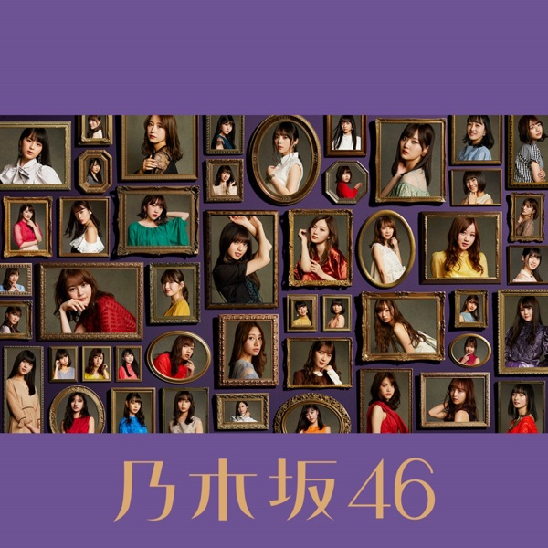

サカミチ
サカミチキスの手裏剣きすのしゅりけん

初収録リリース「今が思い出になるまで」のジャケット
乃木坂46
発売日：2019-04-17
収録：今が思い出になるまで（4thAL）
種別：期別曲
センター：遠藤さくら
作曲：山田智和
編曲：住谷翔平
ライブ披露：37件
フォーメーション
上が後列、下が前列です。色付きがセンター。（参考データに基づく）
 田村真佑
田村真佑 矢久保美緒
矢久保美緒早川聖来
 金川紗耶
金川紗耶掛橋沙耶香
北川悠理
筒井あやめ
清宮レイ
遠藤さくら
 柴田柚菜
柴田柚菜賀喜遥香
参加メンバー（11名）
遠藤さくら、賀喜遥香、掛橋沙耶香、金川紗耶、北川悠理、柴田柚菜、清宮レイ、田村真佑、筒井あやめ、早川聖来、矢久保美緒
この曲が披露されたライブ（37件）
新しい順に20件まで表示しています（全37件）。
同じリリースの曲
ありがちな恋愛、もし君がいなければ、キスの手裏剣、頬杖をついては眠れない、ぼっち党、さゆりんご募集中、ゴルゴンゾーラ、もうすぐ〜ザンビ伝説〜